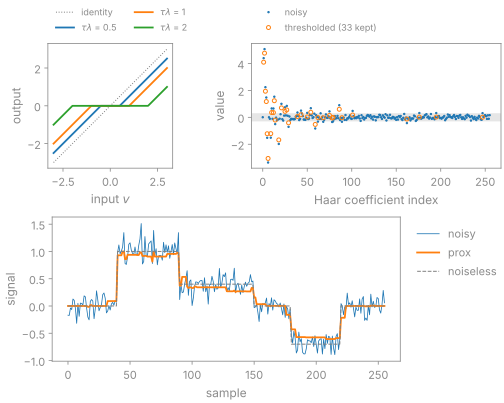

Regularizers#
TL;DR
A solver uses a regularizer only through its proximal operator; for an \(\ell_1\) penalty that operator is soft thresholding.
bartorch.priorsbuilds each of BART’s terms as \(g(Gx)\); a term whose \(G\) is not the identity, such as total variation, decides which solver you can use.An
ImplicitPriorputs a denoiser in place of the proximal operator.
An undersampled or noisy acquisition does not determine the image on its own, so you add a penalty that expresses what you know about it: few significant wavelet coefficients, piecewise-constant intensity, low rank across a contrast axis. You choose the term and its weight \(\lambda\); the solver (Solvers) does the rest. Lesson 5 of the Course compares three terms and sweeps their weights, and lesson 10 replaces the term with a denoising network.
Capabilities#
Builds every regularization term BART’s
picsaccepts, from an object with axes rather than a-Rstring.Code:
bartorch.priors. Tests: the terms are the ones barts parser knows; a term is the string the parser reads; an axis is an axis and not a bitmask; every term bart has can be asked for (test_solve.py).Applies a term’s proximal operator on its own, with the bits BART’s solvers get from it.
Code:
prox(). Tests: a term applied here is the one bart iterates with; the l1 term is a soft threshold at gamma times its weight (test_priors.py).Soft-thresholds a tensor element-wise or jointly over axes, and hard-thresholds it.
Code:
soft_thresh(),hard_thresh(). Tests: soft thresh is its closed form; joint soft thresh shrinks by the norm over the joint axes; hard thresh keeps what exceeds the threshold (test_wavelet_thresh.py).Reports each term’s transform \(G\) and the shape its proximal operator works on.
Code:
transform_is_identity(),prox_shape(). Tests: a wavelet term carries its transform inside the proximal operator; total variation thresholds the components of a gradient; the laplace term carries a real transform in front of it (test_priors.py).Builds a term once per image shape and hands the same operator to every solve.
Code:
build(). Tests: a term builds its operator once per shape (test_priors.py); a term is built once and handed over as it stands (test_solve.py).Cycle-spins the wavelet term by a random shift before every application, as BART’s
picsdoes, unlessrandshift=False.Code:
Wavelet. Tests: cycle spinning makes the wavelet threshold a random one (test_priors.py); cycle spinning is on as it is for the tool (test_solve.py).Refuses a tensor that requires a gradient in BART’s proximal operators, which have no backward pass.
Code:
prox(). Tests: the proximal operator refuses a gradient rather than dropping one (test_priors.py).Applies a denoiser in place of a term, on the image or on the codomain of a transform you give.
Code:
ImplicitPrior. Tests: a denoiser stands where a term would (test_optim_functional.py); the alternating direction step splits where the denoiser acts (test_priors.py).
Division of responsibility#
BART: each term’s proximal operator and transform, built by
opt_reg_configure, including the wavelet, thresholding and low-rank code.bartorch: the term objects and their axes, the proximal operator as a function, and the conversion between a complex image and the real planes a network takes.
Your network, or deepinv’s and MONAI’s: the denoiser behind an
ImplicitPrior.
Method#
The regularized estimate is
and a proximal solver alternates a step on the data term with the proximal operator of the penalty,
the point closest to \(v\) that also keeps \(g\) small. For \(g = \lVert\cdot\rVert_1\) it is soft thresholding, \(\operatorname{prox}(v)_i = \frac{v_i}{\lvert v_i\rvert}\max(\lvert v_i\rvert - \tau\lambda, 0)\): entries with modulus below \(\tau\lambda\) are set to zero, the others are shrunk by \(\tau\lambda\), and the phase is kept. Applied to wavelet coefficients, it keeps the few large ones that carry the edges and removes the many small ones that carry the noise.


The figure is computed with soft_thresh(),
fwt() and a Wavelet term with the
Haar wavelet and no random shift. term.prox(x, gamma) thresholds at gamma
times the term’s weight: the weight is part of the term, and gamma is the
solver’s step.
Proximal operators of the terms#
For \(\tfrac{\lambda}{2}\lVert x\rVert_2^2\) (L2) the
proximal operator is the scaling \(v/(1+\tau\lambda)\). Total variation
thresholds the finite differences jointly, the components of each voxel’s
gradient by their Euclidean norm (isotropic TV). The locally low-rank term
soft-thresholds the singular values of image blocks, and
NonNegative projects onto the set it names.
joint_axes makes any thresholding term shrink a group of entries by its norm,
for example across coils or contrasts. The wavelet term transforms, thresholds
and transforms back.
Terms on a transformed variable#
When \(G\) is unitary, \(\operatorname{prox}_{g\circ G}(v) = G^H \operatorname{prox}_g(Gv)\).
The wavelet and locally low-rank terms use this form: they apply their
transform inside the proximal operator and report \(G = I\). The step is exact
for the Haar wavelet on even lengths and non-overlapping blocks without random
shifts, and an approximation with the redundant Daubechies and CDF wavelets,
overlapping blocks or cycle spinning. For a general \(G\), such as the
finite differences of total variation, the Fourier transform of
FourierL1 or the Laplacian of
Laplace, \(g\circ G\) has no closed-form proximal
operator: the solver has to apply \(G\) itself, which IST and FISTA do not and
ADMM and the primal-dual method do. Total generalized variation and the two
infimal convolutions also add auxiliary variables to \(x\) and go to the same
two solvers. The table in Regularization and denoising lists \(G\) for every term, and
Solvers turns it into the choice of solver.
Implicit priors#
Plug-and-play reconstruction replaces \(\operatorname{prox}_{\tau\lambda g}\) with
a denoiser \(D_\sigma\), called as denoiser(x, sigma) with no explicit \(g\).
ImplicitPrior is accepted wherever a proximal term is; with
spatial= it hands the network real planes of order unity and converts the
result back, and with transform= it is applied to \(Gx\), for a network trained
on contrast-weighted images while the solver works on subspace coefficients.
Unlike BART’s proximal operators it is differentiable, so a solve containing
it can be trained end to end (Learned reconstruction).
Examples#
5. Choosing a regularizer: Tikhonov, wavelet and total-variation terms on one acquisition, and their weights.
10. Plug-and-play reconstruction: a pretrained denoiser in place of the term.
Regularization and denoising: every term, its functional, its transform and the solvers that take it.